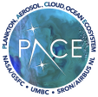

Explore ocean color data products from NASA's PACE (Plankton, Aerosol, Cloud, ocean Ecosystem) mission. Visualize time-series data for various ocean parameters.
Chlorophyll-a (Chl-a; mg m-3) is a photosynthetic pigment in algae and cyanobacteria and serves as a proxy for phytoplankton biomass in aquatic ecosystems.
→ View MapColored Dissolved Organic Matter (CDOM) is the light-absorbing fraction of dissolved organic matter that strongly influences underwater light fields, and CDOM absorption (aCDOM; m-1) serves as a key indicator of blackwater systems rich in humic substances.
→ View MapTotal suspended solids (TSS; mg m-3) concentration represents the abundance of non-algal particles. In rivers, estuaries, and coastal waters, TSS is a key indicator of turbidity and is widely used in water quality monitoring and remote sensing applications.
→ View MapThis work was supported by the NASA PACE program (80NSSC24K1415), the NASA EMIT program (80NSSC24K0865), and the NSF (2425811 and 2425812), which supported algorithm development and validation. Product validation was also strongly supported by the USACE ERDC Freshwater HAB Program and the NOAA NCCOS Hypoxia Program (Grant NA23NOS4780285). We further acknowledge support from NASA's Marine Biodiversity Observation Network (MBON) project for estuarine water quality product validation.
